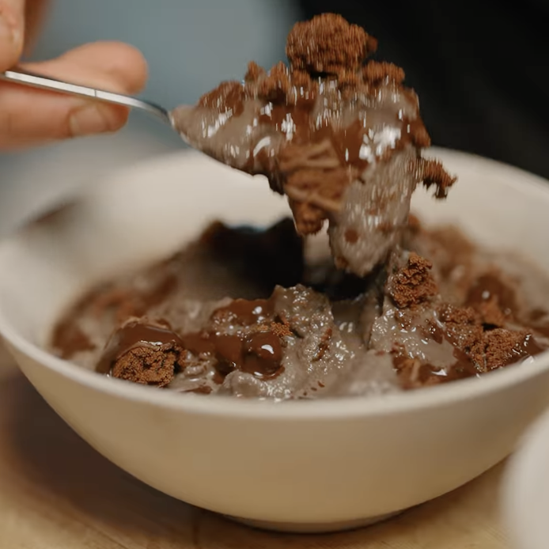

Helado Proteico Casero
Ingredientes:
- Hielo
- 1 ½ taza sal
- 1 taza leche
- 1 scoop proteína
- Toppings de preferencia (galletas, sirope de chocolate, etc)
Instrucciones:
- Toma una gran cantidad de hielo en un tazón (o bolsa)
- Agrega 1 1/2 taza de sal (solo usa la más económica)
- Toma una botella shaker con una taza de leche con un scoop de proteína
- Luego, coloca el líquido en una bolsa ziploc, la bolsa en el hielo y agita durante unos 2-3 minutos
(quizás más tiempo si tienes menos hielo)
- Decora con los ingredientes que prefieras